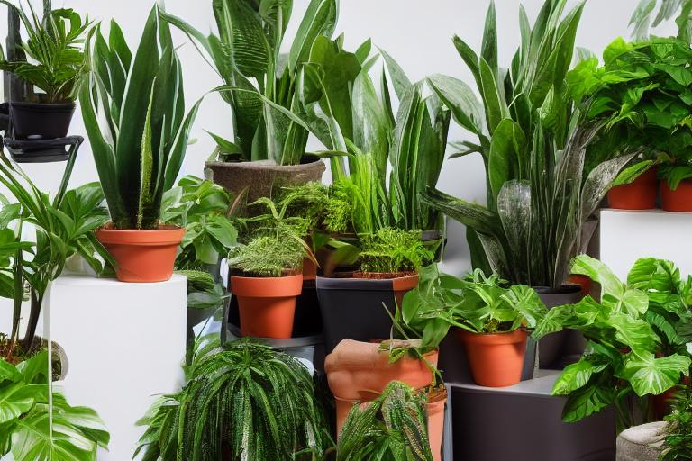
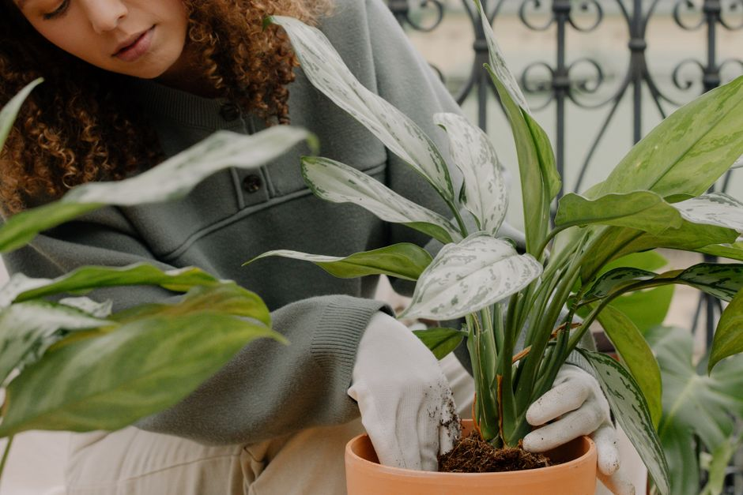

Cómo limpiar y pulir tu plantarium para mantener su belleza
Si tienes un plantarium y deseas mantenerlo siempre hermoso, este artículo te proporcionará pasos concretos para limpiar y pulir adecuadamente tu espacio de plantas. Siguiendo estos consejos, podrás disfrutar de un entorno vegetal saludable y atractivo durante mucho tiempo.

Equipos necesarios
Para empezar, asegúrate de tener los siguientes elementos a mano:
- Un paño suave
- Un cubo de agua
- Un pulverizador de agua
- Una escobilla suave
- Un paño húmedo
- Alcohol etílico (opcional)
Pasos para limpiar el plantarium
1. Eliminar hojas secas y desechos

Photo: cottonbro studio / Pexels
Primero, quita las hojas secas o cualquier residuo que puedas ver. Esto no solo mantendrá tu plantarium limpio, sino que también evitará que las bacterias se desarrollen en las partes muertas de las plantas.
Ejemplo: Imagina que tienes un plantarium con varias plantas de suculentas. Durante la inspección, descubres que una de las suculentas tiene algunas hojas secas en la base. Las quitas cuidadosamente con un par de tijeras y las guardas en la basura.
2. Lavar las plantas
Utiliza un pulverizador de agua para mojar suavemente las plantas. Asegúrate de no aplicar demasiada presión para evitar que las plantas se dañen. Evita el sol directo durante esta etapa.
Ejemplo: Si tienes un plantarium con plantas de interior como geranios y orquídeas, pulveriza suavemente estas plantas desde las 9:00 a 12:00 horas. Esto te dará aproximadamente 20 minutos para completar la tarea.
3. Limpiar el vidrio
Usa un paño suave y humedecido con agua para limpiar el vidrio del plantarium. Si notas manchas difíciles de quitar, puedes aplicar un poco de alcohol etílico. Luego, seca el vidrio con un paño limpio.
Ejemplo: Imagina que tu plantarium tiene un vidrio que se ha ensuciado con polvo y manchas de insectos. Después de aplicar un poco de alcohol etílico, puedes limpiar el vidrio con un paño suave en 15 minutos.
4. Pulir el suelo
Asegúrate de que el suelo del plantarium no tenga exceso de tierra o restos de hojas. Utiliza una escobilla suave para remover la tierra adormecida y asegurarte de que las plantas tengan suficiente oxígeno.
Ejemplo: Si tienes un plantarium con un sustrato de tierra mixta, puedes usar una escobilla para remover la tierra adormecida en 10 minutos. Esto te permitirá verificar si las plantas necesitan más nutrientes o si el sustrato necesita un cambio.
Pasos para pulir el plantarium
5. Aplicar un polvo anti-hongos
Para prevenir el desarrollo de hongos en el plantarium, puedes aplicar un polvo anti-hongos en las hojas de las plantas. Aplica una fina capa y asegúrate de que no queden residuos visibles.
Ejemplo: Si tienes una orquidea en tu plantarium, puedes aplicar un polvo anti-hongos en las hojas de la orquidea. Esto se hace una vez al mes, en torno a las 17:00 horas, para evitar que el polvo se ensucie con polvo o suciedad del ambiente.
6. Ajustar el ambiente
Finalmente, verifica si el ambiente del plantarium está adecuado para las plantas. Asegúrate de que la temperatura y la humedad sean apropiadas, y ajusta los asistentes de iluminación y ventilación si es necesario.
Ejemplo: Si tu plantarium está en un lugar con alta humedad, puedes ajustar la ventilación para permitir un flujo de aire fresco. Esto se hace durante las horas de mayor frescura, por ejemplo, entre las 7:00 y 9:00 horas.
Conclusión
Siguiendo estos sencillos pasos, podrás mantener tu plantarium siempre limpio y pulido. Recuerda que estos cuidados son esenciales para el bienestar de las plantas y para mantener el aspecto visual del plantarium. Con un poco de dedicación, podrás disfrutar de un entorno vegetal saludable y atractivo durante mucho tiempo.